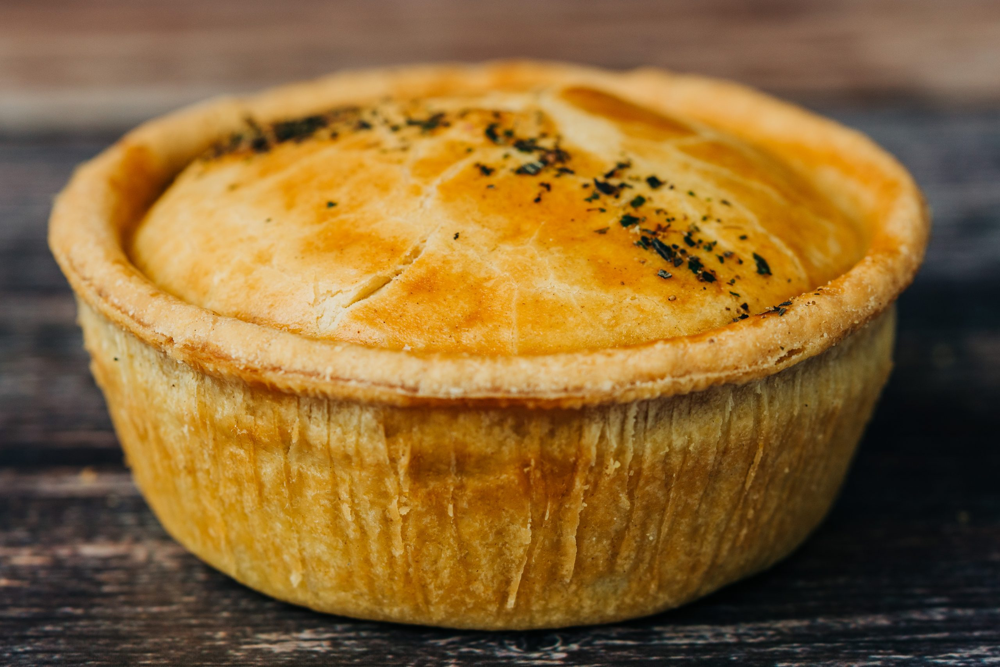

Pie

Description
A pie is a baked dish consisting of a crust typically made from pastry dough, enclosing various sweet or savory fillings.
The crust can be made from ingredients like flour, butter, and water, and it serves as both a base and a protective layer for the filling.
The filling can vary widely depending on the type of pie being made.
Ingredients
Steps
- Preheat your oven according to the instructions on the pre-made meat pies. Typically, this would be around 350-400°F (175-200°C).
- Place the pre-made meat pies on a baking sheet and bake them in the preheated oven for the recommended time, usually around 20-30 minutes or until they are golden brown and piping hot.
- While the pies are baking, prepare the potato chips (fries) according to your preferred method. You can deep fry them or bake them in the oven until they are crispy and golden brown.
- In a saucepan, melt the butter over medium heat.
- Once the butter is melted, add the flour and whisk continuously to make a roux. Cook the roux for 1-2 minutes until it turns a light golden brown color.
- Gradually pour in the beef or chicken broth, whisking constantly to prevent lumps from forming.
- Bring the gravy to a simmer and cook for 5-10 minutes, stirring occasionally, until it thickens to your desired consistency.
- Season the gravy with salt and pepper to taste.
- Once the pies are baked, the chips are crispy, and the gravy is ready, it's time to assemble your dish.
- Place a hot meat pie on each plate, alongside a portion of crispy chips.
- Pour the rich gravy over the pies and chips, ensuring they are generously coated.
- Serve your pie, chips, and gravy hot and enjoy this hearty and comforting British classic!